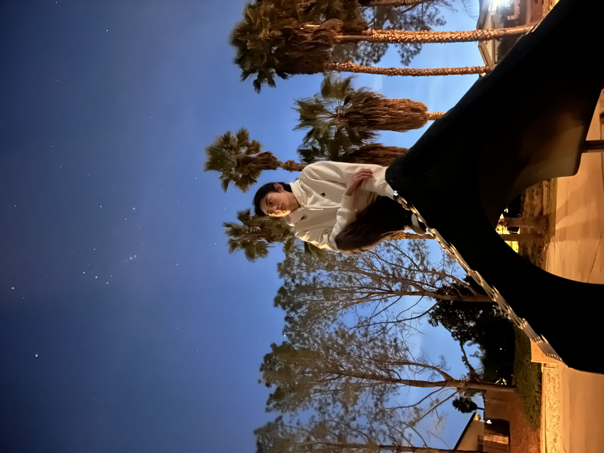

I am about to start my fourth year at San Francisco State University, majoring in Industrial Design
and minoring in Computer Science.
I would describe my design style as functional, I think there is
beauty in function, and I love designs that don’t suffer from featuritis and do exactly what they’re
meant to do.
Before I came to San Francisco, I lived in San Diego, For as long as I can remember, I’ve liked
making stuff. Cardboard and hot glue were my bread and butter. Eventually, I taught myself to 3D
model and bought a 3D printer. That ended up getting me a job at a 3D print farm in San Diego, where
I spent my time maintaining hundreds of 3D printers and helping design custom upgrades for them.
That experience taught me that I love problem-solving and designing solutions accordingly.
After graduation, I plan to work as a general product designer as my main source of income. Someday,
I hope to work as an engineer/designer developing 3D printers.
Of course, I will always continue to work on
personal projects that I love, for example, right now I’m working on a prop axe from the How to Train
Your Dragon franchise. I’m also part of a research grant where I’m helping develop a new type of electric skateboard.
When I’m not designing, I love to play single-player RPGs like Assassin’s Creed and the occasional
third-person shooter like Helldivers 2. I’m also a massive music fan and listen to music nearly
non-stop. My favorite genres are soundtracks and pop-rock, but my current favorite song is probably
“Money Game, Pt. 2” by the artist Ren.
